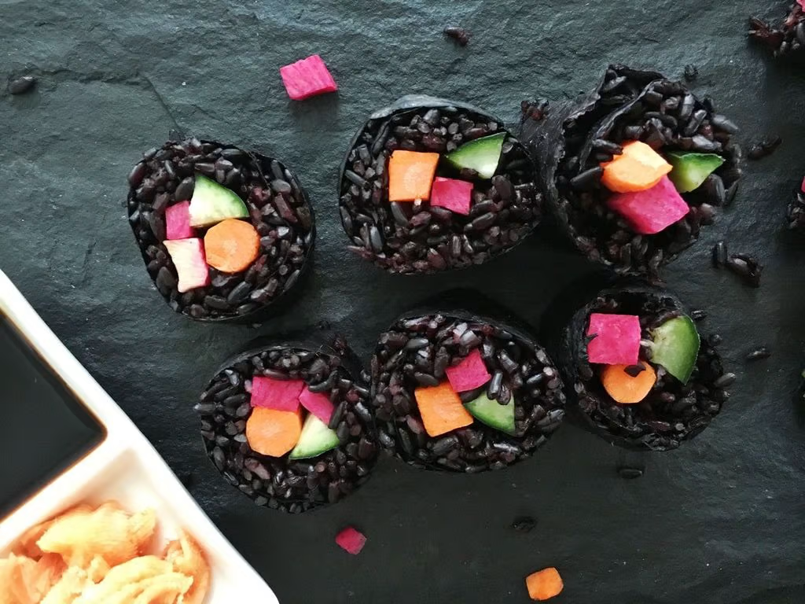

YUMM
Diet: Vegan
Serving Size: 3
Description
This instagram-worthy black rice sushi is easy to make and packs well for a brown bag lunch that may spur office lunch-envy.
Black rice is more nutritious than either white or brown rice. It contains more antioxidants, fiber, and protein per cup. Plus, it’s inky black hue comes from anthocyanins, powerful flavanoids that various studies suggest may offer protection against cardiovascular disease and even cancer.

Ingredients
Rice
- 1 cup black rice
- 2¼ cups water
- 6 sheets nori
Tezu
- 2 Tbsp. brown rice vinegar
- 1 Tbsp. water
- 1 tsp. honey
- 1 tsp. unrefined salt (real, pink, or Celtic salt)
Filling
- 1 cucumber
- 2 watermelon radish, julienned
- 3 carrots
- 1/2 an avocado
Steps
- Bring water and black rice to a boil. Cover and bring heat down to low. Allow to cook for about 25-30 minutes, or until all water is absorbed.
- Meanwhile, prepare your filling ingredients. Cut the cucumber lengthwise into quarters, then use your knife to remove the seeds. Next, cut each quarter lengthwise into two or three strips.
- For the carrots, slice each lengthwise, so they should be about the size of the cucumber strips. (If using thick carrots, cut into thirds or quarters.) Steam the carrots to soften by placing them in a steamer basket over boiling water. Put lid on and steam for 3-4 minutes, or until tender.
- Make the tezu (sushi rice vinegar) by combining all ingredients in a small bowl and whisking well with a fork.
- When rice is cooked and has absorbed all the water, remove to a bowl to cool. Stir in the tezu and mix well for a minute or two, to help the rice become more “sticky.”
- When rice has totally cooled, lay nori out on top of a piece of plastic wrap with the long edge perpendicular to you. Take about ¼- ½ cup rice and spread out evenly in a thin layer on top of the nori, leaving about a 2-inch edge on the right side.
- About 1.5 inches from the left side, place your filling ingredients, so that you can roll left to right. (Use one strip of carrot and cucumber, make one line of the julienned radish, and two slices of avocado end to end. You don’t want it to be too full!)
- Use your thumb and forefinger to pick up the plastic wrap on left side, and gently start to flip the edge over the veggie fillings to create a roll. Continue rolling until the roll is completely closed (You can dampen your hand with water and run it along the edge to help seal the roll.)
- Use a wet sharp knife to cut into 6 pieces.
- Repeat with remaining nori and ingredients.
- Serve with tamari (gluten-free soy sauce) and pickled ginger.